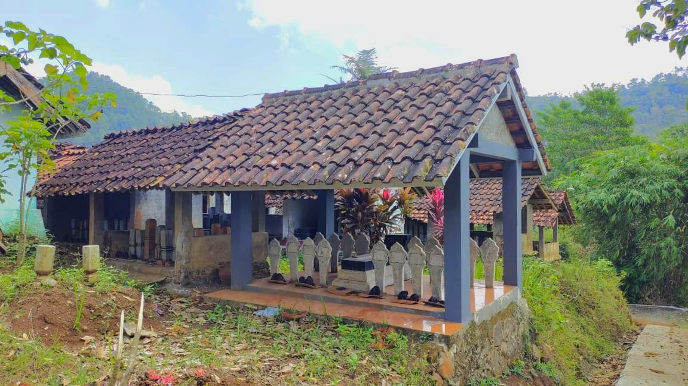

Ragam Tradisi dan Budaya Masyarakat Logandu
Selain sejarahnya, Logandu juga dikenal dengan kekayaan budaya yang berakar kuat dari kehidupan pertanian. Sebagian besar masyarakat adalah petani, sehingga banyak ritual yang berkaitan dengan padi. Sebelum turun ke sawah, warga biasanya mengadakan slametan sebagai doa agar terhindar dari marabahaya dan diberi hasil panen yang melimpah. Ketika musim panen tiba, mereka melaksanakan metri atau mendet pari, yaitu upacara syukur atas hasil bumi yang diperoleh. Dalam pandangan masyarakat Logandu, padi memiliki kedudukan istimewa. Ia diperlakukan layaknya “pengantin” yang harus dihormati, sehingga dikenal istilah penganten padi.
Setelah panen, warga juga melaksanakan nyadran, yaitu selametan sebagai ungkapan syukur sekaligus sarana mempererat kebersamaan antarwarga. Di samping itu, ada tradisi tulak balak yang bertujuan menolak musibah. Kehidupan sosial juga tidak terlepas dari ritual-ritual tertentu. Misalnya, sebelum mengadakan hajatan seperti pernikahan, keluarga biasanya melakukan ziarah ke makam leluhur dengan membawa dupa dan sesaji, kemudian mengadakan slametan. Ziarah ini dianggap wajib sebagai bentuk penghormatan. Bahkan dalam menentukan hari pernikahan, warga masih memperhatikan tanggal baik karena dipercaya dapat memengaruhi keberlangsungan rumah tangga.
Tradisi budaya di Logandu juga tampak dalam perayaan besar pada bulan Suro, yaitu Merdi Bumi atau ruwat bumi. Kata “merdi” berarti tanah, sehingga ritual ini dimaknai sebagai penghormatan pada bumi yang telah memberikan kehidupan. Merdi Bumi biasanya diisi dengan pertunjukan wayang kulit dan kesenian kasab (tayub) yang mirip dengan tari jaipong. Perayaan ini bukan hanya hiburan, tetapi juga sarana menjaga hubungan harmonis antara manusia dengan alam.
Dahulu, unsur mistis cukup kental dalam kehidupan masyarakat. Malam Jumat Kliwon misalnya, sering dianggap sebagai waktu angker karena diyakini ada aktivitas gaib di sekitar danyang desa. Cerita-cerita seperti ini menjadi bagian dari keseharian warga. Namun, sejak tahun 2000-an, kepercayaan tersebut mulai berkurang. Meski begitu, kisah mistis tetap hidup sebagai cerita budaya yang memperkaya identitas Logandu, sekaligus pengingat bahwa modernisasi tidak sepenuhnya menghapus jejak tradisi lama.